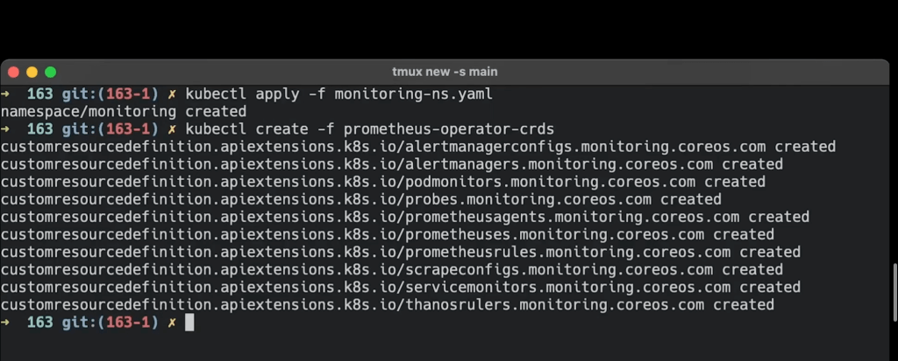

🚀 kubectl apply vs kubectl create in CRD (Custom Resource Definitions)

🚀 CREATE ONE TIME USE TO SEE THE FAIL
Kubernetes offers powerful tools to manage resources in your cluster, and understanding the difference between kubectl apply and kubectl create is crucial, especially when working with Custom Resource Definitions (CRDs). 💡 In this post, we’ll break down the key differences between the two commands and when to use each for managing CRDs.
🎯 What You’ll Achieve:
By the end of this blog, you’ll be able to:
-
Understand the difference between
applyandcreatefor CRDs. -
Choose the right command based on your use case.
-
Confidently manage CRDs in your Kubernetes cluster.
💡 Understanding CRDs
Custom Resource Definitions (CRDs) allow you to extend Kubernetes by defining your own resource types. Think of CRDs as blueprints for resources you want Kubernetes to manage for you.
Now, when managing CRDs, you’ll typically use kubectl apply or kubectl create. But what's the difference? 🤔 Let’s break it down!
🔍 kubectl create
-
Purpose:
kubectl createis used to create a new resource from scratch. It's a one-time operation that fails if the resource already exists. -
Use Case: If you're sure the CRD or the resource you’re creating doesn’t already exist in the cluster, use
create.
Example:
kubectl create -f my-crd.yaml
This command will create a new CRD from the YAML file. If a resource already exists with the same name, it will throw an error.
When to Use:
-
Initial creation of a CRD or any Kubernetes object.
-
When you want to ensure that no existing resource is being overwritten.
🔍 kubectl apply
-
Purpose:
kubectl applyis more flexible. It creates a resource if it doesn’t exist, or it updates the resource if it’s already there. -
Use Case: Use
applywhen you want to update an existing CRD or resource without deleting and recreating it.
Example:
kubectl apply -f my-crd.yaml
This command will create the resource if it doesn’t exist or update it if it does. No errors will occur if the resource is already in place.
When to Use:
-
Updating existing CRDs or other Kubernetes resources.
-
Applying configuration changes.
-
Handling declarative resource management over time.
🚀 Key Differences:
Featurekubectl create``kubectl applyActionCreates a resource (fails if it exists)Creates or updates a resourceUsageOne-time creationOngoing resource managementError HandlingThrows an error if resource existsNo errors if resource existsBest ForCreating new resourcesManaging resource lifecycle
Screenshot Pause 🚀

💡 When to Choose Which Command:
-
Use
kubectl createwhen you’re certain that the resource doesn’t exist and you just want to create it once. -
Use
kubectl applywhen managing the lifecycle of a resource over time and you want the flexibility to create or update as needed.
Now you should have a clear understanding of when to use kubectl apply vs. kubectl create for managing Custom Resource Definitions (CRDs). Whether you're creating resources from scratch or updating them over time, these commands will be at the core of your Kubernetes workflow.
🔗 Connect with me:
-
💼 LinkedIn: https://www.linkedin.com/in/rifaterdemsahin/
-
🐦 Twitter: https://x.com/rifaterdemsahin
-
🎥 YouTube: https://www.youtube.com/@RifatErdemSahin
-
💻 GitHub: https://github.com/rifaterdemsahin
Happy Kubernetes-ing! 🛠️
Imported from rifaterdemsahin.com · 2025